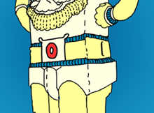

Seeing each of our young kids learn to count sparked our imagination. We wanted to explore the simple act of counting from zero to ten in weird and wonky ways.
We'll continue to teach him new tricks and surprise you with updates.
Hi! we're Amit Pitaru and James Paterson. We love to make art and to code, and especially to mix the two together.
Numby is our first collaborative iPad app, but we've been making stuff together for a while. Over the years chasing our imaginations has lead us into the strange lands of drawing, music, animation, and even dance projects.
If we could only show you three things, they would be:
You'll notice that unlike other counting Robots, Numby counts down to Zero rather than one.
Why did we make Numby aware of Zero? First of all, Zero is an important number. Someone even wrote an entire book about it!
But there's also a more personal reason. Counting seems like such a simple thing to do, but even we computer coders make silly mistakes.
While most people start counting from 1, in computer programs we typically start counting from 0. Sometimes that gets us coders in trouble because we forget that counting from 0 to 10 takes 11 steps (not 10!). Try counting up to 10 with your fingers, but start from 0..1..2..3.. and you'll see!
By playing with Numby, we hope our kids will always remember that 0 is a number just like any other.